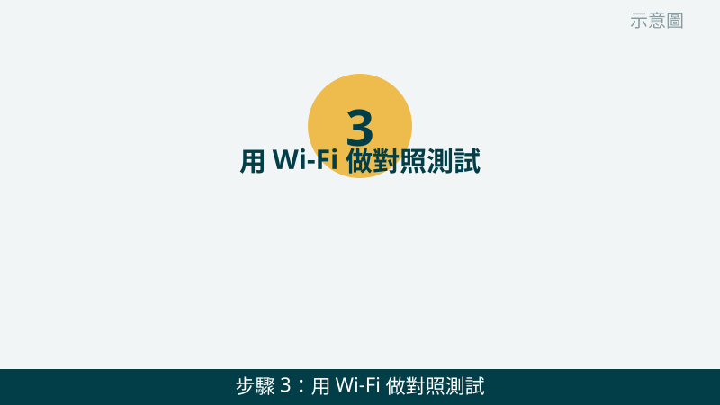
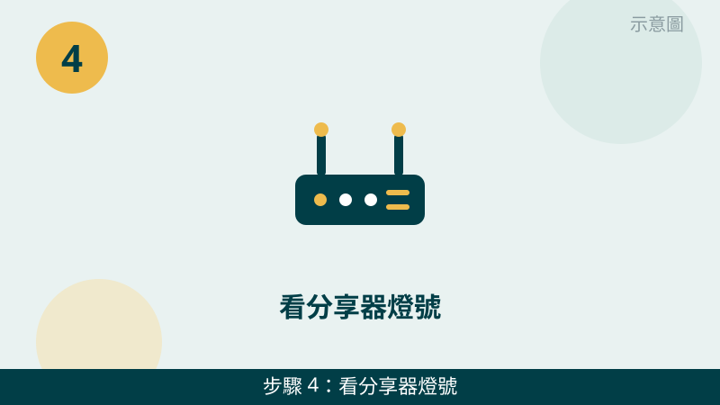
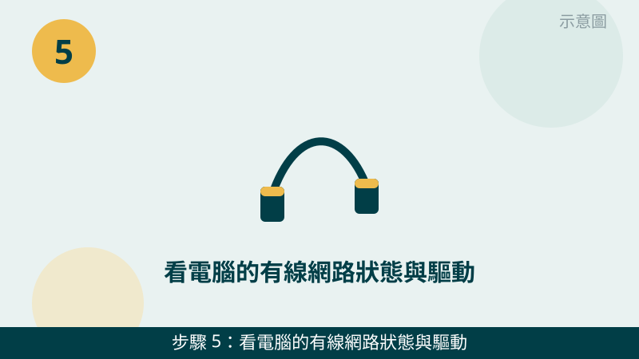

網路線明明插著、卻顯示沒有網際網路，先不要急著認定是電腦壞了。有線網路不通，線材、網路孔、分享器、驅動都有可能，交叉測試才是分清的關鍵。檢查之前，請先確認您的網路是怎麼接的：電腦直接接分享器、還是經過牆上的網路孔。
開始之前先跟您說明分清的邏輯：一次只換一個東西，換完看有沒有恢復，就能鎖定是哪一關。同時換線又換孔，恢復了也不知道是哪一個幫的忙。您照下面的順序，一次換一樣，答案就會自己浮現。
網路孔與分享器的燈號先傳給我們看
把電腦網路孔的燈號、分享器上對應孔位的燈號拍下來傳 LINE，燈怎麼亮、哪個孔沒亮，一看就知道往哪個方向查。先免費評估、報價透明，確認後再預約維修。
網路線沒網路自救檢查清單（由簡到難）
- 1. 先重插兩端，再看網路孔燈號。請把網路線在電腦端和分享器端都完整拔掉再插回去，確認插到底、有聽到「喀」一聲卡住。接著看電腦網路孔旁邊的小燈：正常連通時通常會有燈亮起或閃爍。怎麼判斷：重插後燈亮了、網路恢復了，就是接觸鬆脫；兩端都重插、燈還是不亮，再往下一步查。
示意圖（非官方截圖） - 2. 換孔換線交叉測試，一次只換一樣。請先換一條確定是好的網路線試試；如果還是沒網路，再把線換到分享器上另一個孔位試試。怎麼判斷：換線就通了，是原本那條線老化或斷了；換孔就通了，是原本那個孔位有問題；換線換孔都沒通，問題就不在線與孔，要往分享器或電腦設定查。
示意圖（非官方截圖） - 3. 用 Wi-Fi 做對照測試，分清是整戶斷網還是只有有線不通。請用手機或筆電連家裡 Wi-Fi 試試看能不能上網。怎麼判斷：Wi-Fi 也不能上網，可能是分享器當機或對外網路本身有問題，請先看第 4 步；Wi-Fi 可以上網、只有網路線不通，代表對外網路是通的，問題就鎖定在有線這一路上。

示意圖（非官方截圖） - 4. 看分享器燈號，必要時把分享器電源重開一次。請看分享器上面對應孔位的燈號有沒有亮、電源燈與網路燈是不是正常；如果分享器全部燈號都不對勁或當機了，可以把分享器電源拔掉、等約 30 秒再插回去，等它重新開機完成再測試。怎麼判斷：重開分享器後有線、Wi-Fi 都恢復了，就是分享器當機；只有有線不通、Wi-Fi 正常，就不是分享器整台的問題。

示意圖（非官方截圖） - 5. 看電腦的有線網路狀態與驅動。請開啟 Windows「設定」→「網路和網際網路」→「乙太網路」，看它顯示的是「已連線」「未識別的網路」還是「網路纜線已拔除」；再到「裝置管理員」→「網路介面卡」，看有線網卡旁邊有沒有黃色驚嘆號或裝置消失。怎麼判斷：顯示「纜線已拔除」卻明明插著，多半還是線或孔的問題；出現驚嘆號或裝置消失，就要往驅動方向查，不確定的地方請先拍照問我們。

示意圖（非官方截圖） - 6. 如果是走牆上網路孔，先確認孔位與線路走向，不要自己拆牆上面板。請先確認：牆上網路孔後面那條線是接到分享器的哪一個孔、分享器那端有沒有插好；再拿一條短線把電腦直接接分享器測試，確認電腦本身有沒有問題。怎麼判斷：直接接分享器就通了，問題多半在牆內線路或牆上孔位那一段；如果直接接也還是不通，就回到線材與驅動方向查。牆上網路孔與分享器燈號異常時，請先拍照問業者或問我們。
示意圖（非官方截圖）
出現這些情況，就別再自己試了
- 牆上網路孔或分享器燈號異常、懷疑是牆內線路問題——請不要自己拆牆上面板或拉扯牆內線路，先拍照問業者或問我們
- 網路孔裡面有異物、針腳彎曲或斷裂，不要用尖銳物品去挖或硬插
- 分享器有燒焦味、異常發燙，或電源變壓器燙到不敢碰，請先斷電並拍照問我們
- 網路上教的「改登錄檔修網路」「一鍵修復」工具來路不明，不要隨便下載安裝，以免越修越糟
如果您的狀況是「有線時通時不通」，也可以順手檢查線材有沒有被椅子壓到、被門夾到，或水晶頭卡扣是不是斷了。我們的檢測會把線材、孔位、分享器、驅動一起交叉比對，找出真正的問題再報價給您。
常見問題
網路線插著卻沒網路，一定是網路卡壞了嗎？
不一定。網路線沒網路最常見的原因是線材鬆脫、線材老化、分享器當機，或是驅動出問題，網路卡本身壞掉反而比較少見。先照本文 6 步做換孔換線交叉測試，通常就能縮小到是線、孔、分享器還是驅動其中一關；真的檢查完還是沒網路，才需要進一步檢測網路卡或主機板方向的問題。
Wi-Fi 可以上網，但網路線沒網路，是怎麼回事？
這代表您家裡的對外網路是通的，問題出在有線這一路：可能是網路線、電腦網路孔、分享器的有線孔，或有線網路的驅動設定。請先做本文第 1 到第 3 步的交叉測試，換一條線、換一個孔試試看；如果換線換孔都沒用，再往驅動方向查。
網路沒通的狀況拍照傳 LINE 就可以先判斷嗎？
可以先給方向。把電腦網路孔的燈號、分享器上對應孔位的燈號、以及網路設定裡有線網路的狀態拍下來傳給我們，通常能先看出是線、孔、分享器還是設定方向的問題；要完全確認，還是需要實機檢測，這部分評估不收費，請放心傳。
相關文章：Wi-Fi 斷線、連不上怎麼辦、自救百科總覽